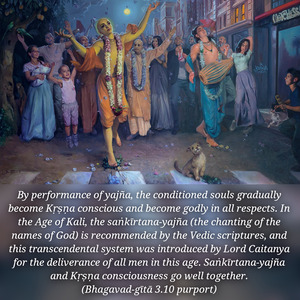

In the beginning of creation, the Lord of all creatures sent forth generations of men and demigods, along with sacrifices for Viṣṇu, and blessed them by saying, “Be thou happy by this yajña [sacrifice] because its performance will bestow upon you everything desirable for living happily and achieving liberation.”

The material creation by the Lord of creatures (Viṣṇu) is a chance offered to the conditioned souls to come back home – back to Godhead. All living entities within the material creation are conditioned by material nature because of their forgetfulness of their relationship to Viṣṇu, or Kṛṣṇa, the Supreme Personality of Godhead. The Vedic principles are to help us understand this eternal relation, as it is stated in the Bhagavad-gītā: vedaiś ca sarvair aham eva vedyaḥ. The Lord says that the purpose of the Vedas is to understand Him. In the Vedic hymns it is said: patiṁ viśvasyātmeśvaram. Therefore, the Lord of the living entities is the Supreme Personality of Godhead, Viṣṇu. In the Śrīmad-Bhāgavatam also (2.4.20) Śrīla Śukadeva Gosvāmī describes the Lord as pati in so many ways:
śriyaḥ patir yajña-patiḥ prajā-patir
dhiyāṁ patir loka-patir dharā-patiḥ
patir gatiś cāndhaka-vṛṣṇi-sātvatāṁ
prasīdatāṁ me bhagavān satāṁ patiḥ
The prajā-pati is Lord Viṣṇu, and He is the Lord of all living creatures, all worlds, and all beauties, and the protector of everyone. The Lord created this material world to enable the conditioned souls to learn how to perform yajñas (sacrifices) for the satisfaction of Viṣṇu, so that while in the material world they can live very comfortably without anxiety, and after finishing the present material body they can enter into the kingdom of God. That is the whole program for the conditioned soul. By performance of yajña, the conditioned souls gradually become Kṛṣṇa conscious and become godly in all respects. In the Age of Kali, the saṅkīrtana-yajña (the chanting of the names of God) is recommended by the Vedic scriptures, and this transcendental system was introduced by Lord Caitanya for the deliverance of all men in this age. Saṅkīrtana-yajña and Kṛṣṇa consciousness go well together. Lord Kṛṣṇa in His devotional form (as Lord Caitanya) is mentioned in the Śrīmad-Bhāgavatam (11.5.32) as follows, with special reference to the saṅkīrtana-yajña:
kṛṣṇa-varṇaṁ tviṣākṛṣṇaṁ
sāṅgopāṅgāstra-pārṣadam
yajñaiḥ saṅkīrtana-prāyair
yajanti hi su-medhasaḥ
“In this Age of Kali, people who are endowed with sufficient intelligence will worship the Lord, who is accompanied by His associates, by performance of saṅkīrtana-yajña.” Other yajñas prescribed in the Vedic literatures are not easy to perform in this Age of Kali, but the saṅkīrtana-yajña is easy and sublime for all purposes, as recommended in Bhagavad-gītā also (9.14).